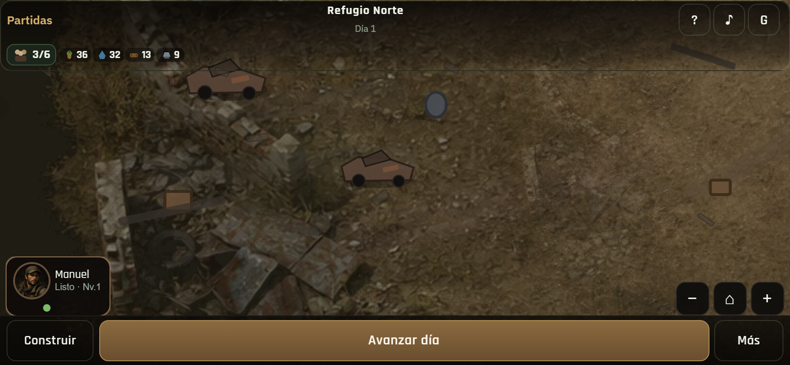
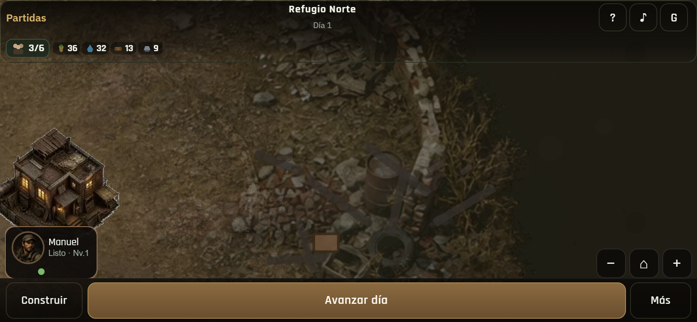
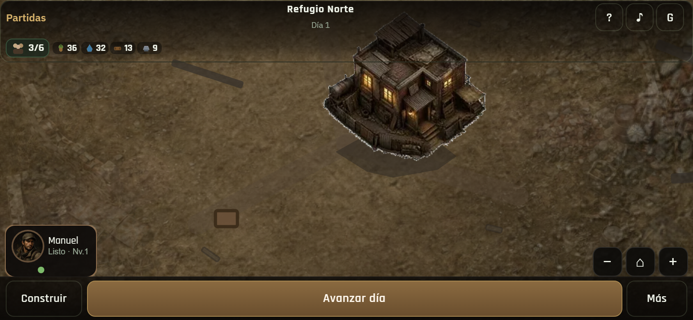
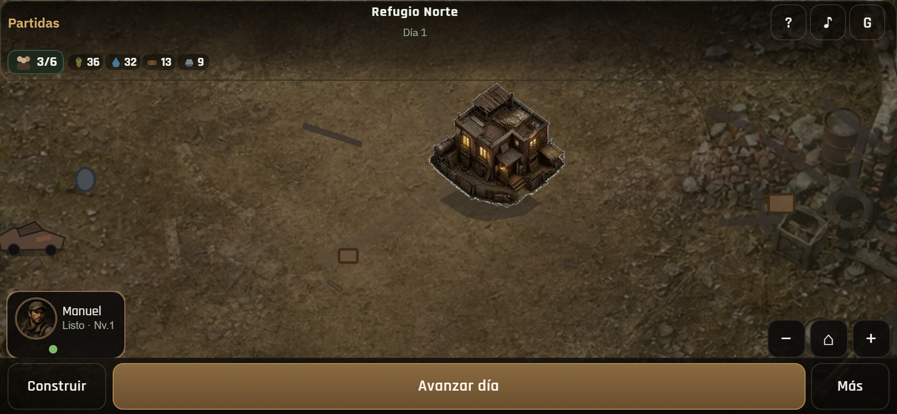
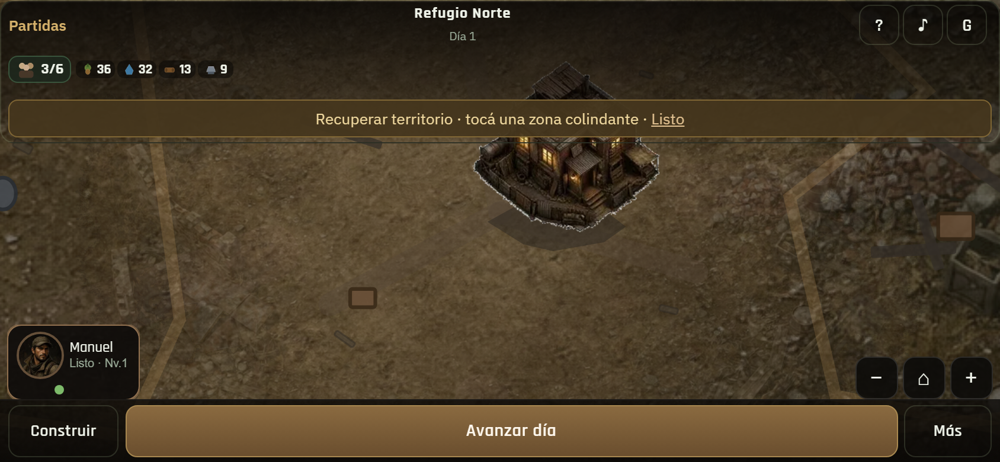
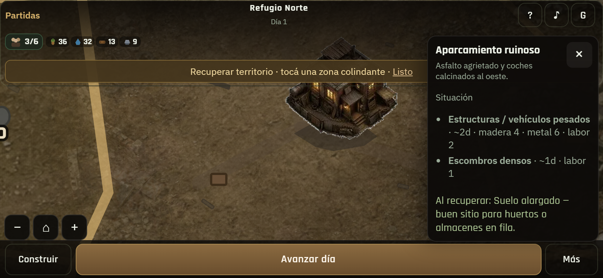
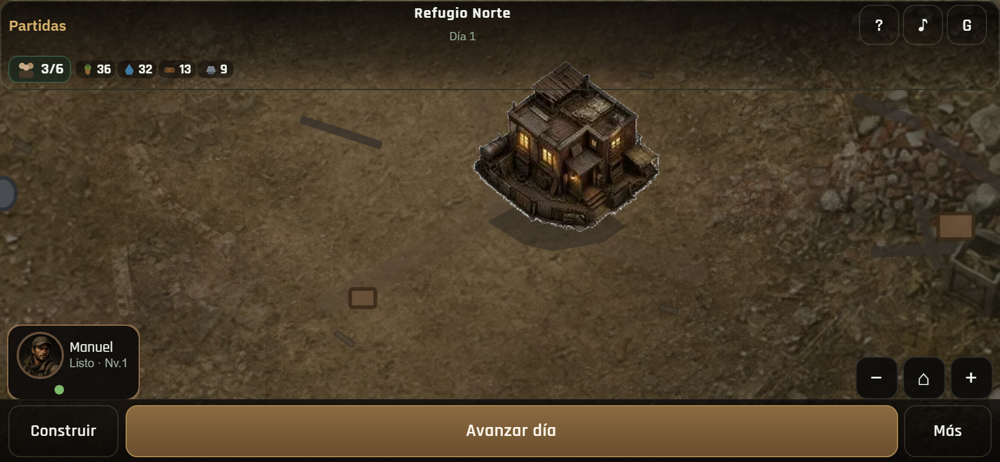
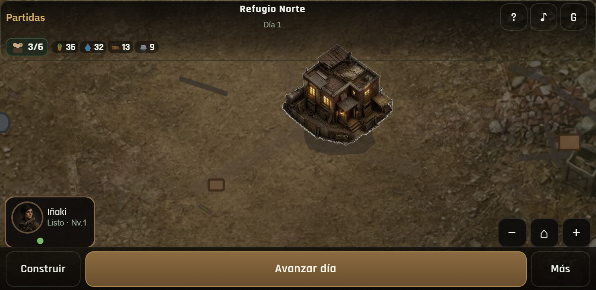
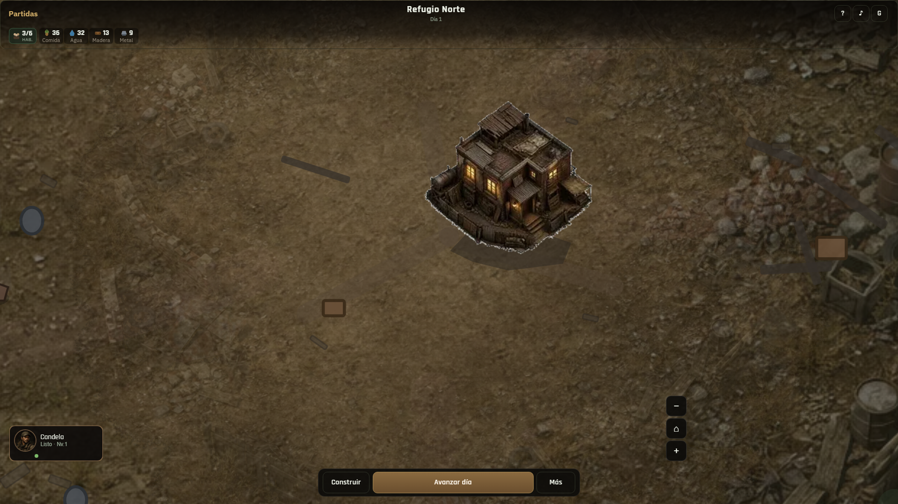

01 · D1 cercanoHQ + entorno · sin overlays · es un lugar
01 · D1 cercanoHQ + entorno · sin overlays · es un lugar

02 · Pan oesteAparcamiento / ruinas reales — no polígono vacío

03 · Pan esteOtra zona con identidad (ruinas)

04 · Zoom cercanoDetalle HQ / entorno

05 · Zoom alejadoLectura más global · mundo continúa
 06 · RecentrarVuelve a Núcleo/HQ
06 · RecentrarVuelve a Núcleo/HQ

07 · Modo expansiónLímites tenues · sin GIS de tablero

08 · Sector seleccionadoRemarcado claro; resto secundario

09 · Núcleo fundidoSin isla · parte del mundo
 10 · 844×390Landscape
10 · 844×390Landscape

11 · 740×360Manejable · mundo no empequeñecido

12 · DesktopMundo continuo sin overlays